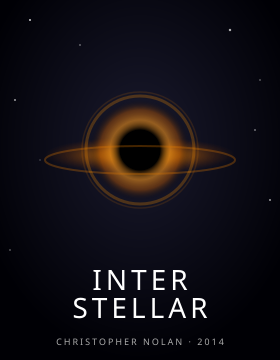
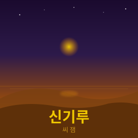

근본을 이해할 때 가장 멀리 갈 수 있다고 믿는 백엔드 개발자.
군 복무 중 독학한 양자역학이 나를 코드로 이끌었다.
🐥 우아한테크코스 8기☕ Java⚛️ 양자역학🔢 알고리즘
01.
자기소개
안녕하세요, 중앙대학교 소프트웨어학부 졸업예정자 한동희(아이큐)입니다.
현재 우아한테크코스 8기
백엔드 과정에서 Java와 OOP, TDD를 깊이 탐구하고 있습니다.
군 복무 중 독학으로 접한 양자역학은 단순한 물리학 공부를 넘어 "근본을 이해해야 한다"는 철학을 남겨주었습니다.
짐 배것의 퀀텀스토리와 하이젠베르크의 부분과 전체는 그 여정에서 인생을 바꿔준 책들입니다.
프로그래밍 대회(SCPC, ACPC) 경험을 통해 문제를 구조적으로 분해하는 사고방식을 길렀고,
이 두 가지가 지금 코드를 대하는 방식의 근간이 되었습니다.
암기보다는 원리를, 빠름보다는 깊이를 추구합니다.
기술 학습을 위해 dev-book-lab
이라는 GitHub 오거나이제이션을 운영하며, Spring Core · Spring Data · Spring Boot · Spring MVC 시리즈와
JVM, Effective Java 등 여러 딥다이브 문서를 꾸준히 작성하고 있습니다.
군 복무 중 독학으로 양자역학을 파고들던 시절, 가장 깊이 읽은 책.
플랑크의 양자 가설부터 현대 입자물리학까지, 100년의 역사를
결정적 순간들로 엮어낸 방식이 압도적이었다.
물리학이 단순한 수식 암기가 아니라 치열한 인간의 탐구 과정이라는 것,
그리고 "왜 그렇게 되는가"를 끝까지 묻는 태도가 얼마나 중요한지를
이 책에서 배웠다. 지금도 어려운 개념을 만나면 이 책의 접근법을 떠올린다.

🎬 인생 영화
인터스텔라
Christopher Nolan · 2014
블랙홀, 웜홀, 시간 팽창… 영화를 보며 물리학 개념들이
실제 우주에서 어떻게 작동할지 상상하던 밤을 잊을 수 없다.
킵 손(Kip Thorne)의 일반상대성이론이 영화 속 시각화로
구현되는 장면은 지금도 경이롭다. 우주의 규모 앞에서
겸손해지고, 동시에 그 규모를 이해하려는 인간의 노력에
뭉클해지는 작품.

🎵 인생 노래
신기루
씨잼 (C JAMM) · 2017
우테코 입과 전날 밤, 잠이 안 와서 혼자 듣다가 멍하니 한참을 앉아 있었던 노래.
"가까이 있는 것 같아도 절대 닿을 수 없는 신기루처럼" —
지금 막 잡힐 것 같은 코드 설계의 감각이 항상 한 발짝 앞에 있는 느낌이 오버랩됐다.
붐뱁 특유의 무게감이 좋고, 씨잼의 플로우가 생각을 비워주는 데 좋아서
막히는 문제를 잠시 내려놓을 때 가장 먼저 꺼내는 곡.
05.
TIL
오늘 새롭게 배운 것들을 기록합니다. 작은 발견도 놓치지 않도록.
일급 컬렉션(First-Class Collection)
컬렉션 하나를 래핑한 클래스를 만들어 불변성을 보장하고 도메인 로직을 응집시키는 패턴.
우테코 블랙잭 미션에서 Cards 클래스로 처음 제대로 적용해봤다.
단순히 List를 감싸는 게 아니라, "무엇을 할 수 있는가"에 대한 책임을 직접 갖는다는 것이 핵심.
Tell, Don't Ask 원칙
객체의 상태를 꺼내서 판단하지 말고, 객체에게 무언가를 하라고 명령하라.
getter 남발 → 묻지 말고 시켜라. 로직이 객체 밖으로 흘러나오는 코드를
발견하면 이 원칙을 위반하고 있는 것. 코드 리뷰에서 반복적으로 받은 피드백 덕에 이제는 자연스럽게 체화됐다.
TDD — Red · Green · Refactor 사이클
실패하는 테스트를 먼저 작성(Red), 테스트를 통과하는 최소한의 코드 작성(Green),
중복 제거 및 구조 개선(Refactor). 이 짧은 사이클을 수십 번 반복하면
자연스럽게 검증된 설계가 나온다. 테스트가 설계를 이끄는 경험.